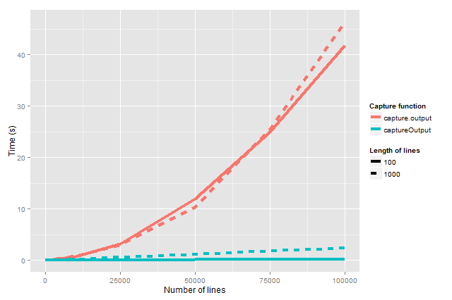

The R function capture.output() can be used to “collect” the output of functions such as cat() and print() to strings. For example,
> s <- capture.output({
+ cat("Hello\nworld!\n")
+ print(pi)
+ })
> s
[1] "Hello" "world!" "[1] 3.141593"More precisely, it captures all output sent to the standard output and returns a character vector where each element correspond to a line of output. By the way, it does not capture the output sent to the standard error, e.g. cat("Hello\nworld!\n", file = stderr()) and message("Hello\nworld!\n").
However, as currently implemented (R 3.1.0), this function is very slow in capturing a large number of lines. Its processing time is approximately quadratic (= \(O(n^2)\)), exponential (= O(e^n)) in the number of lines capture, e.g. on my notebook 10,000 lines take 0.7 seconds to capture, whereas 50,000 take 12 seconds, and 100,000 take 42 seconds. The culprit is textConnection() which capture.output() utilizes. Without going in to the details, it turns out that textConnection() copies lines one by one internally, which is extremely inefficient.
The captureOutput() function of R.utils does not have this problem. Its processing time is linear in the number of lines and characters, because it relies on rawConnection() instead of textConnection(). For instance, 100,000 lines take 0.2 seconds and 1,000,000 lines take 2.5 seconds to captures when the lines are 100 characters long. For 100,000 lines with 1,000 characters it takes 2.4 seconds.
Benchmarking
The above benchmark results were obtained as following. We first create a function that generates a string with a large number of lines:
> lineBuffer <- function(n, len) {
+ line <- paste(c(rep(letters, length.out = len), "\n"), collapse = "")
+ line <- charToRaw(line)
+ lines <- rep(line, times = n)
+ rawToChar(lines, multiple = FALSE)
+ }For example,
> cat(lineBuffer(n = 2, len = 10))
abcdefghij
abcdefghijFor very long character vectors paste() becomes very slow, which is why rawToChar() is used above.
Next, lets create a function that measures the processing time for a capture function to capture the output of a given number of lines:
> benchmark <- function(fcn, n, len) {
+ x <- lineBuffer(n, len)
+ system.time({
+ fcn(cat(x))
+ }, gcFirst = TRUE)[[3]]
+ }Note that the measured processing time neither includes the creation of the line buffer string nor the garbage collection.
The functions to be benchmarked are:
> fcns <- list(capture.output = capture.output, captureOutput = captureOutput)and we choose to benchmark for outputs with a variety number of lines:
> ns <- c(1, 10, 100, 1000, 10000, 25000, 50000, 75000, 1e+05)Finally, lets benchmark all of the above with lines of length 100 and 1,000 characters:
> benchmarkAll <- function(ns, len) {
+ stats <- lapply(ns, FUN = function(n) {
+ message(sprintf("n=%d", n))
+ t <- sapply(fcns, FUN = benchmark, n = n, len = len)
+ data.frame(name = names(t), n = n, time = unname(t))
+ })
+ Reduce(rbind, stats)
+ }
> stats_100 <- benchmarkAll(ns, len = 100L)
> stats_1000 <- benchmarkAll(ns, len = 1000L)The results are:
| n | capture.output(100) | captureOutput(100) | capture.output(1000) | captureOutput(1000) |
|---|---|---|---|---|
| 1 | 0.00 | 0.00 | 0.00 | 0.00 |
| 10 | 0.00 | 0.00 | 0.00 | 0.00 |
| 100 | 0.00 | 0.00 | 0.01 | 0.00 |
| 1000 | 0.00 | 0.02 | 0.02 | 0.01 |
| 10000 | 0.69 | 0.02 | 0.80 | 0.21 |
| 25000 | 3.18 | 0.05 | 2.99 | 0.57 |
| 50000 | 11.88 | 0.15 | 10.33 | 1.17 |
| 75000 | 25.01 | 0.19 | 25.43 | 1.80 |
| 100000 | 41.73 | 0.24 | 46.34 | 2.41 |
Table: Benchmarking of captureOutput() and capture.output() for n lines of length 100 and 1,000 characters. All times are in seconds.

Figure:
captureOutput() captures standard output much faster than capture.output(). The processing time for the latter grows exponentially in the number of lines captured whereas for the former it only grows linearly.
These results will vary a little bit from run to run, particularly since we only benchmark once per setting. This also explains why for some settings the processing time for lines with 1,000 characters appears faster than the corresponding setting with 100 characters. Averaging over multiple runs would remove this artifact.
UPDATE:
2015-02-06: Thanks to Kevin Van Horn for pointing out that the growth of the capture.output() is probably not as extreme as exponential and suggests quadratic growth.
Appendix
Session information
R version 3.1.0 Patched (2014-05-21 r65711)
Platform: x86_64-w64-mingw32/x64 (64-bit)
locale:
[1] LC_COLLATE=English_United States.1252
[2] LC_CTYPE=English_United States.1252
[3] LC_MONETARY=English_United States.1252
[4] LC_NUMERIC=C
[5] LC_TIME=English_United States.1252
attached base packages:
[1] stats graphics grDevices utils datasets methods base
other attached packages:
[1] markdown_0.7 plyr_1.8.1 R.cache_0.9.5 knitr_1.5.26
[5] ggplot2_1.0.0 R.devices_2.9.2 R.utils_1.32.5 R.oo_1.18.2
[9] R.methodsS3_1.6.2
loaded via a namespace (and not attached):
[1] base64enc_0.1-1 colorspace_1.2-4 digest_0.6.4 evaluate_0.5.5
[5] formatR_0.10 grid_3.1.0 gtable_0.1.2 labeling_0.2
[9] MASS_7.3-33 mime_0.1.1 munsell_0.4.2 proto_0.3-10
[13] R.rsp_0.18.2 Rcpp_0.11.1 reshape2_1.4 scales_0.2.4
[17] stringr_0.6.2 tools_3.1.0 Tables were generated using plyr and knitr, and graphics using ggplot2.
Reproducibility
This report was generated from an RSP-embedded Markdown document using R.rsp v0.18.2.